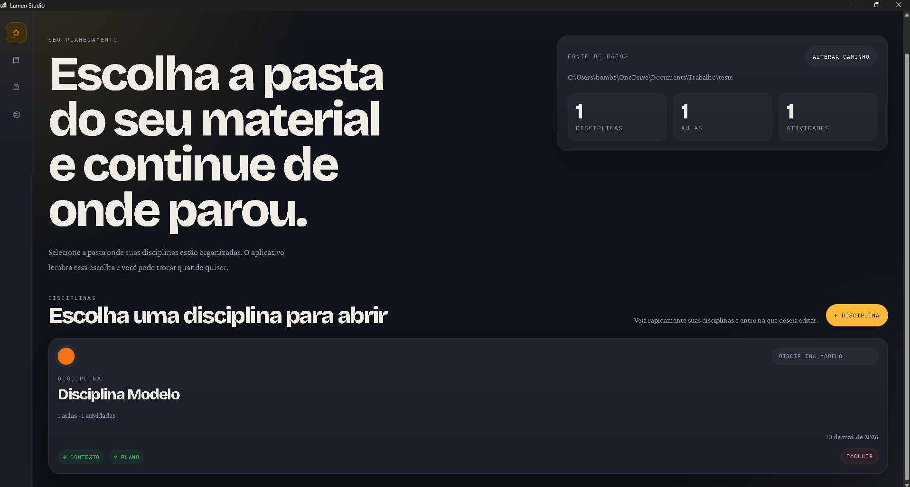
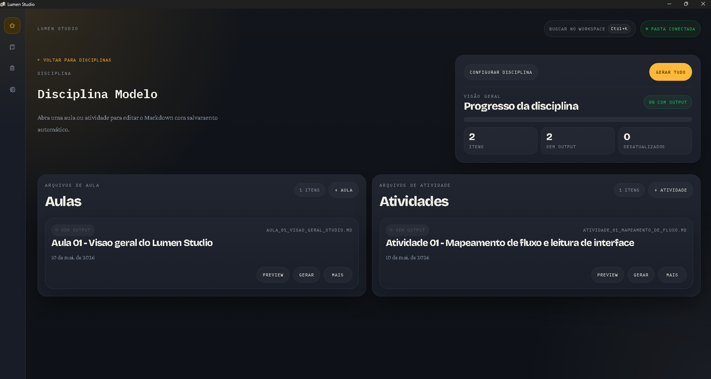
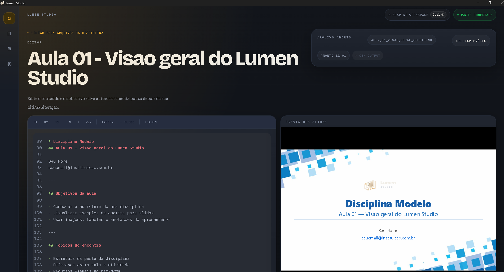
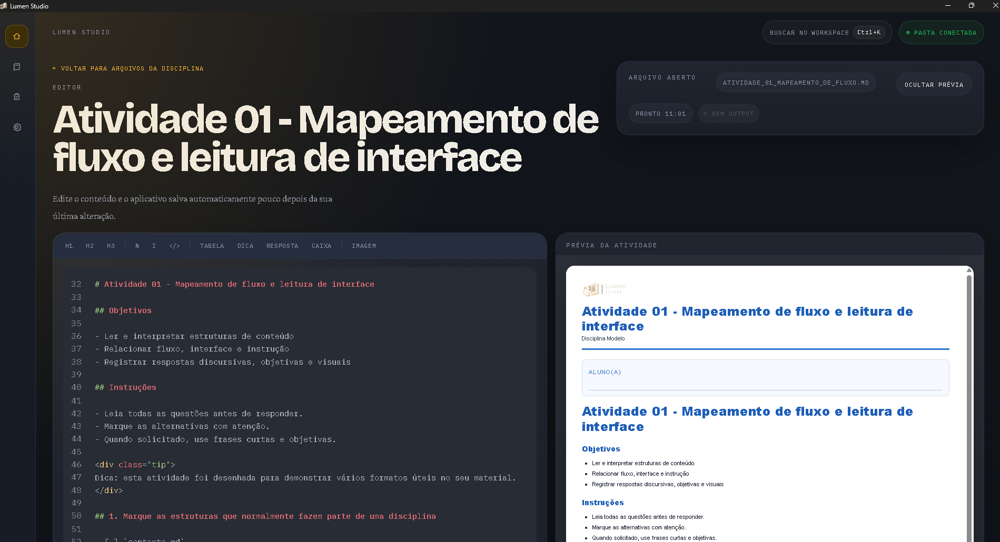

Escreva sem distração
Um editor limpo onde você redige o conteúdo da aula. O Lumen Studio cuida da estrutura — você foca no que ensina.
Para professores que valorizam o tempo
Escreva o conteúdo das suas aulas, gere apresentações e atividades com um clique — tudo salvo no seu computador, sem depender de internet.
Buscando versão mais recente…
Sua sala de aula, no seu controle
Cada disciplina fica organizada em pastas no seu computador. Sem planos de assinatura, sem perder o acesso, sem depender de uma conexão com a internet. Compatível com OneDrive, Google Drive e qualquer rotina de backup.
Um editor limpo onde você redige o conteúdo da aula. O Lumen Studio cuida da estrutura — você foca no que ensina.
Suas aulas viram apresentações prontas para o PowerPoint. Suas atividades viram PDFs direto para a impressora.
O app avisa quando um material ainda não foi gerado ou quando o conteúdo foi atualizado e precisa ser regenerado.
Como funciona
Use o editor integrado para redigir suas aulas e atividades. O app organiza automaticamente por disciplina.
O Lumen Studio transforma o texto em uma apresentação ou atividade formatada — em segundos.
Os arquivos ficam salvos no seu computador. Abra no PowerPoint, imprima o PDF ou compartilhe como quiser.
Interface



